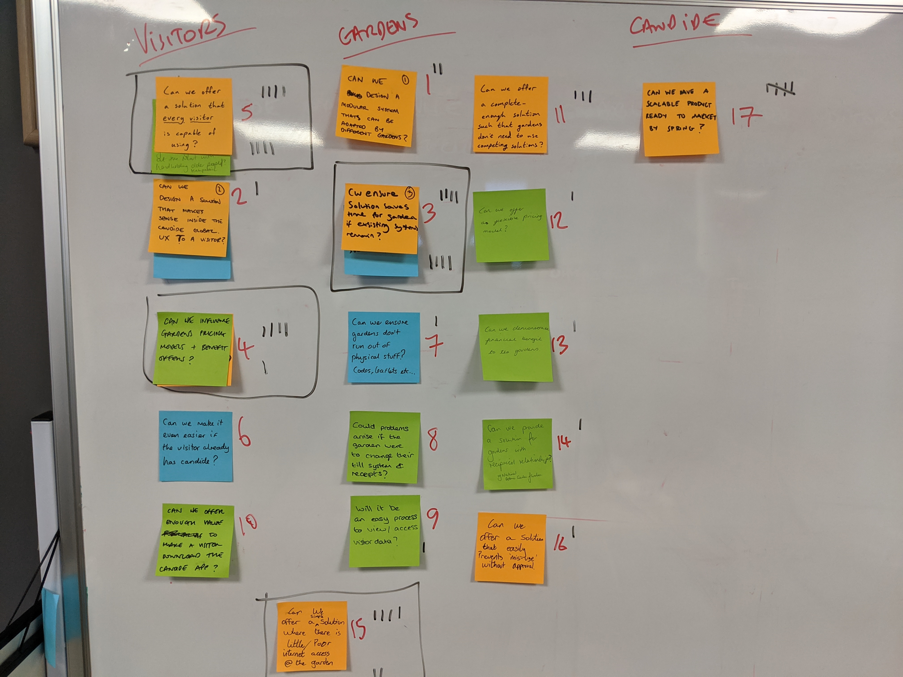
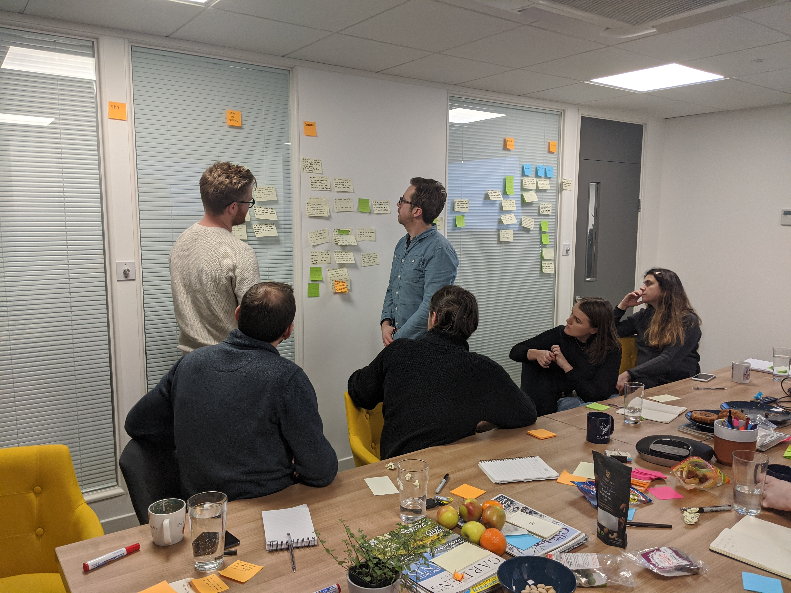
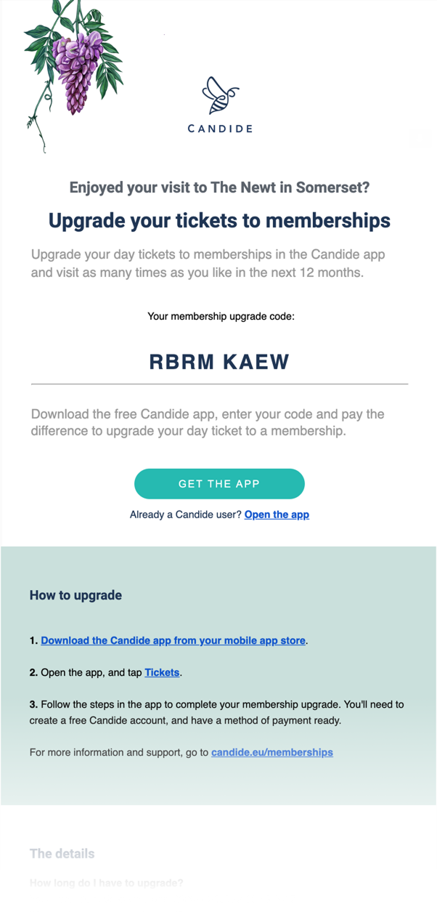
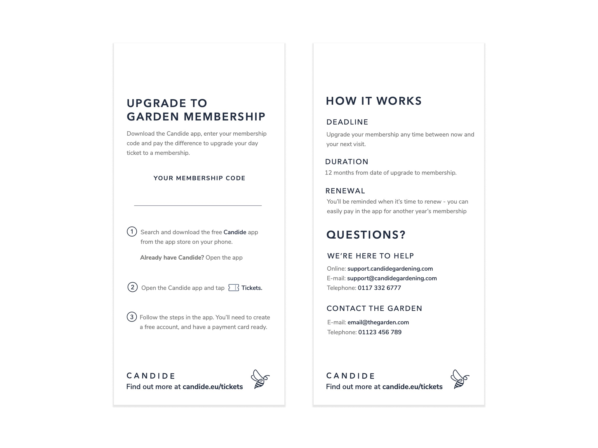
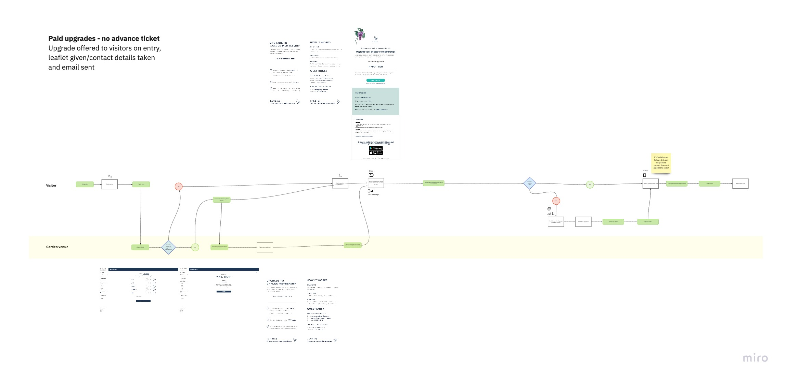
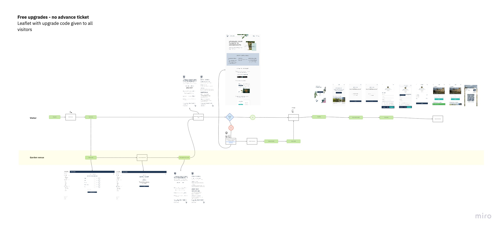
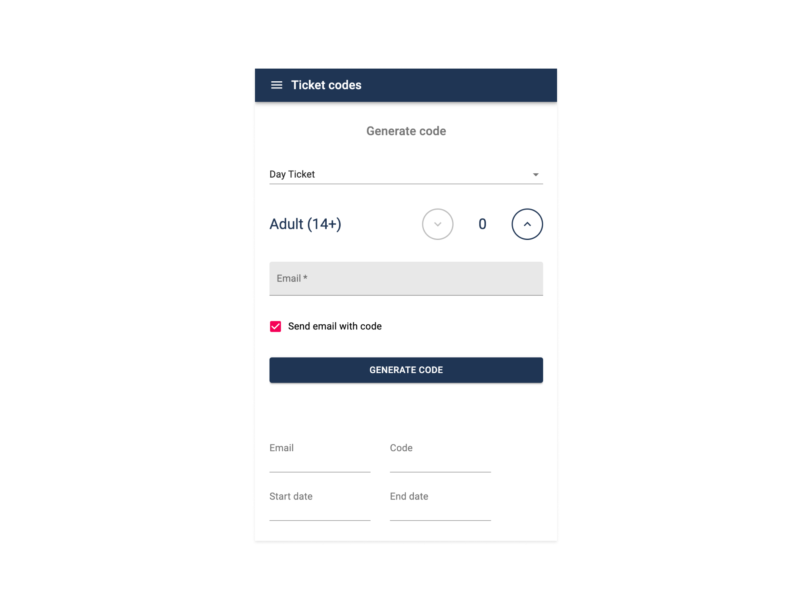
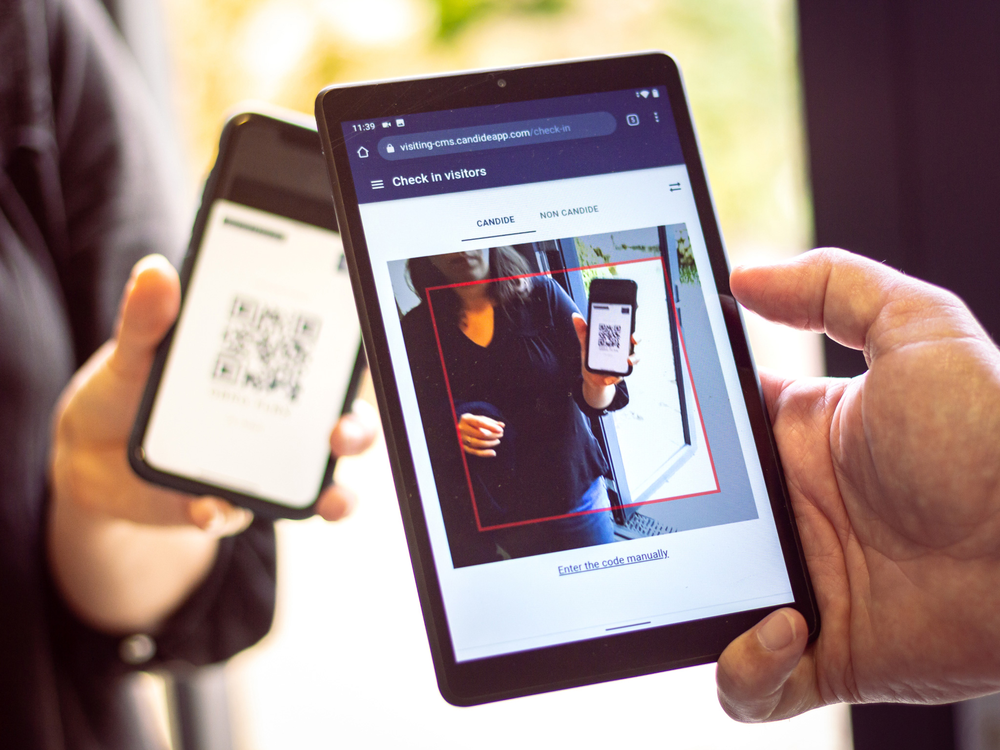

Travel & TourismB2BSaaSB2CMobileServiceProduct
Candide —
What I did
Contextual observation
Prototyping
Interface design
Information architecture
Service mapping
User interviews
User journey mapping
User testing
Team
I worked as product designer and researcher, in collaboration with a product manager, customer success representatives and engineers.
Context
Public gardens often rely on membership holders as essential contributors to the garden - through annual membership costs, spending at the garden, volunteering their time and knowledge, and in many other ways.
Providing ways for garden visitors to easily become members is important to gardens to grow their member base, and Candide provided partner gardens with a way to do this. Candide’s existing day ticket to membership service relied on staff members at the garden manually approving all membership requests from visitors, who were required to upload a photo of their receipt as proof of visiting. This was a laborious and time-consuming process, and one we could improve on.
Outcome
We removed the need for manual input from the garden, meaning garden staff were free to focus on giving visitors a great experience. And it was quick and easy for visitors to upgrade to membership.
The new service helped The Newt in Somerset offer free membership upgrades to all their visitors, and also helped gardens like Cambo Gardens in Scotland increase the number of visitors upgrading to membership after a visit.
Exploring the problem
During visits to gardens using our existing service, as well as gardens not yet working with us, we interviewed and observed many garden staff members. We discovered some key considerations related to garden memberships. There were 2 common membership models - your day ticket was deducted from cost of season ticket, or you could upgrade to a season ticket free. Gardens’ membership process often required an individual on-site - with sometimes only one person qualified. This led to a bottleneck of one person authorising all memberships, and manually approving membership applications takes up a lot of time for back office staff.
“Go into a room and chat to ____. She enters details on spreadsheet, visitor receives ticket in post”
Botanic garden manager
“I know all my members - they say 'hi' when they come in”
Front of house garden staff member
From these garden visits, we also learnt a lot about the process for visitors. We combined this with analytics data from monitoring Candide’s existing membership upgrade service, to understand how it could work better for visitors. Visitors were required to keep their receipt in good condition, in order to photograph it later - this was a problem. We found they often dropped out of the upgrade journey before completing it, often at the photo upload step. Visitors also couldn’t easily add more people to their membership, if they wanted to visit again with family members, which was a frequent occurrence.
Solutions and ideas
We ran a mini-sprint with colleagues from customer success, finance, support and product to define the goals and success criteria of the new service, and to collaboratively design a better service. We mapped out a user journey, from first visit to the garden, to becoming a member. We wrote ‘challenger questions’, thinking about what could go wrong, and how we could keep ourselves accountable to users and on-track.


After solo sketching, and collaboratively refining our solutions, we had a user test flow for both the visitor and the garden venue. We set about prototyping this flow to gather feedback on it and test the various interactions and touch points. We tested the visitor-facing flow with participants who were keen garden visitors, to assess how easily they could upgrade their day tickets to memberships - including the upgrade email they received, with their upgrade code. An early iteration of the day ticket email included a membership upgrade code, but this confused visitors, so we started sending the upgrade code in a separate email after the visitor had been to the garden.

We tested the garden-facing flow with garden staff members, to understand how the new service touchpoints worked for them - including an early version of the upgrade leaflet for in-person ticket purchases - with space for a handwritten code, and the garden’s logo.

Iterating on the service
One of the main success criteria for the service was that it shouldn’t require manual input from garden staff, and should easily enable visitors to upgrade to membership at a time that suits them. We needed to cater to both the ‘free upgrade’ model, and also the ‘day ticket cost deducted from membership’ model. We also needed to cater for visitors who bought their ticket online in advance, versus those who bought their ticket on the door. I mapped all these journeys - with key touchpoints for staff and visitors visualised.


The redesigned service used 8-character upgrade codes to store how many tickets a visitor had paid for, and give them the option to upgrade these to memberships, either for free, or for an additional cost, depending on the membership model of the garden. Visitors who bought a ticket online before their visit received an upgrade code via email when their ticket was scanned to enter the garden, and visitors who paid on the door either received a leaflet with a handwritten code, and an email with their upgrade code if they provided an email address. Visitors could then use their codes to upgrade to membership using the Candide app. At this point in time Candide garden memberships were only available in the Candide mobile app. We highlighted the need to offer the upgrade service online, and tackled moving memberships to the web in a later project.

Visitors were able to part-claim the tickets on their code, so they could split up their memberships if they visited in a group. They could also add more visitors to their membership at the upgrade stage, if they wanted to bring other people in future. Functionality to easily enable splitting and sharing memberships was highlighted as a potential improvement for a future iteration of the membership product. With the improved upgrade service, garden staff were free to focus on giving visitors a great experience at the garden. They could see who had received upgrade codes, whether they’d redeemed them, and send new ones if required. The new service helped The Newt in Somerset offer free membership upgrades to all their visitors, and also helped gardens like Cambo Gardens in Scotland increase the number of visitors upgrading to membership after a visit.


Future iterations
Web upgrades. Easy to share memberships. Physical memberships and offline upgrades.
Credits
Photography by Chris D'Agorne